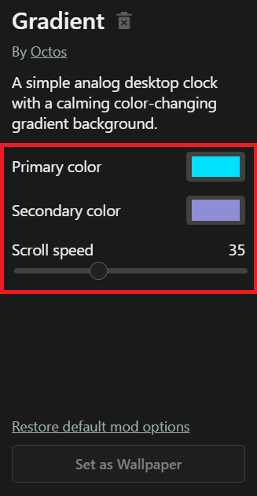

octos.json Reference
Each mod folder can optionally include an octos.json file, which allows you to specify mod metadata and user options.
A typical mod folder might look like this:
MyAwesomeMod/
├── index.html
└── octos.jsonExample
octos.json:
{
"name": "My Awesome Mod",
"author": "Me",
"description": "A dynamic live wallpaper with interactive elements.",
"image": "assets/image.png", // path to card image to display in Octos app
"preview": "assets/preview.gif", // path to preview image to display in explore page
"entry": "index.html", // entry point, path to local HTML file or external webpage
"options": { // user options, configurable in Octos app
"enable-effect": {
"type": "checkbox",
"label": "Enable effect?",
"value": true
},
"speed": {
"type": "range",
"label": "Speed",
"min": 1,
"max": 10,
"value": 5
}
}
}You can find some examples of mods that include octos.json files in the Octos Community repo.
Fields
author
Type: string
The author's name.
Example:
"author": "underpig1"name
Type: string
Mod's display name.
Example:
"name": "My Awesome Mod"description
Type: string
A short description of the mod's purpose or features.
Example:
"description": "This is my awesome mod."image
Type: string
Relative path to the card image to show in the Octos app.
Example:
"image": "my-mod.png"preview
Type: string
Relative path to the preview image/animated gif to be shown in the Octos explore page when a user clicks on it.
Example:
"preview": "my-mod.gif"entry
Type: string
Path to the main HTML entry point that launches the wallpaper. Can either be a local HTML file or an external webpage.
Example:
"entry": "index.html""entry": "https://www.example.com"options
Type: object
A JSON object that defines one or more customizable settings that can be changed by users of your mod in the Octos app:

See the user options guide for a quick-start.
- These settings, along with input change event listeners, can be accessed in JS with the
UserOptionsclass of the Octos API. - The keys of the
optionsobject represent IDs that can be accessed viaUserOptions. - Each object inside
optionsdefines a single input control containing any of the following fields:
| Property | Type | Description |
|---|---|---|
type |
string |
The type of input. One of: checkbox, range, file, description, select, color-picker, dropdown, number, text |
label |
string |
Label text shown to the user (required). |
value |
any |
The default value for the input. |
min |
number |
(range/number only) Minimum value (optional). |
max |
number |
(range/number only) Maximum value (optional). |
step |
number |
(range/number only) Step size (optional). |
options |
array |
(select only) List of possible options for select/dropdown input. |
onchange |
string |
JavaScript function to execute on change. Passes value of the changed input to the function. Ex. "onchange": "(value) => alert(value)". |
onload |
string |
JavaScript function to execute on load. Passes value of the loaded input to the function. Ex. "onload": "(value) => alert(value)". |
onchangeload |
string |
JavaScript function to execute on either change or load. Passes value of the input to the function. Ex. "onchangeload": "(value) => alert(value)". |
Supported values for type:
-
checkbox: a checkbox for a true/false, yes/no option. Renders as<input type="checkbox">.{ "type": "checkbox", "label": "Enable dark mode?", "value": false } -
range: a number slider range. Supportsmin,max, andstepfields. Renders as<input type="range">.{ "type": "range", "label": "Speed", "value": 3, "min": 1, "max": 5 } -
file: allows the user to upload a local file. Renders as<input type="file">.{ "type": "file", "label": "Image" } -
select|dropdown: a dropdown with multiple options, as specified in itsoptionsproperty as an array of strings.dropdownis an alias forselect. Renders as a<select>element.{ "type": "select", "label": "Theme", "options": ["Light", "Dark", "Automatic"], "value": "Automatic" } -
color-picker: a color selection dialog.valuemust be in hexidecimal form. Renders as<input type="color">.{ "type": "color-picker", "label": "Color", "value": "#ffffff" } -
number: a writable number input. Supportsmin,max, andstepfields. Renders as<input type="number">.{ "type": "number", "label": "Speed", "value": 3, "min": 1, "max": 5 } -
text: a writable text input. Renders as<input type="text">.{ "type": "text", "label": "URL", "value": "https://www.google.com" } -
description: a text description that only renders itslabelproperty. Useful for adding a text blob in your user options. Renders as a<label>element.{ "type": "description", "label": "The next few options let you specify important details" }
Notes:
-
An option must include
labelto render. -
optionsmaps directly to standard HTML input elements. -
Add as many options as you like — they will be rendered dynamically in the app.
Example:
"options": {
"enableParticles": {
"type": "checkbox",
"label": "Enable Particles",
"value": true
},
"particleSize": {
"type": "range",
"label": "Particle Size",
"min": 1,
"max": 20,
"step": 1,
"value": 5
},
"theme": {
"type": "select",
"label": "Theme",
"options": ["Light", "Dark", "Auto"],
"value": "light"
}
}source
Type: string
Link to the website or source code for your mod. Clicking the "Go to source" button in the Octos app explore page will take the user to the webpage specified in this field. If it is not specified, it will redirect the user to the source in the octos-community repository.
Example:
"source": "https://github.com/underpig1/my-awesome-mod"authorsite
Type: string
Link to the author's webpage. Clicking on the author's name in the Octos app (if specified in the author field) will bring the user to this page.
Example:
"authorsite": "https://github.com/underpig1"version
Type: string
Current mod version.
Example:
"version": "1.0.0"Notes
- All paths should be relative to the mod folder root location. Paths may also be external links.
Example Folder Structure
MyAwesomeMod/
├── index.html
├── octos.json
├── assets/
│ └── preview.png
│ └── image.png
└── js/
│ └── index.js
└── css/
└── style.css